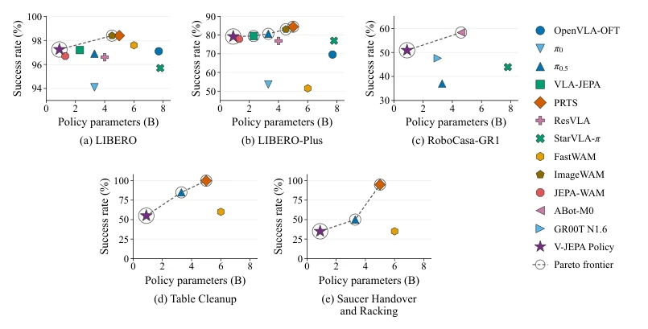

现有的世界动作模型（WAMs）大多通过适配大规模预训练的视频生成模型（如Video Generation Models）或图像编辑模型来构建，试图继承其视觉生成先验（Zhu et al., 2025; Pai et al., 2025; Kim et al., 2026）。这种做法虽然有效，但存在明显弊端：一是模型体积庞大，继承了整个生成骨干网络，导致推理开销巨大；二是生成模型往往关注像素级细节，可能引入与机器人控制无关的冗余信息。作者质疑：构建有效的WAM是否必须继承完整的预训练视觉生成模型？能否仅利用大规模预测性预训练诱导出的视觉潜空间（Predictive Visual Latent Space）作为基础？现有工作如VLA-JEPA (Sun et al., 2026) 和 JEPA-WAM (Lin et al., 2026) 虽然结合了预测，但往往依赖额外的视觉-语言对齐阶段或复杂的预训练策略。本文旨在验证冻结的V-JEPA预测性潜空间是否足以支撑高效的WAM学习，并探索其在不依赖动作标签的情况下，从广泛视频数据中迁移未来建模知识的能力。
Figure 1: Overview of V-JEPA Policy. A frozen V-JEPA 2.1 encoder defines the visual latent space. The future predictor jointly processes context tokens and learnable future queries in a single forward pass, providing layer-wise, future-informed context key–value states to a flow-matching action expert. Both modules receive language and proprioceptive conditioning and are jointly trained from scratch with future-latent regression and action flow matching. target representations in V-JEPA (Assran et al., 2025), we designate its future tubelet positions as the masked region. The context path thus removes tokens at future positions before the Transformer blocks of the encoder, and encodes only observed tokens. The target path instead processes the complete unmasked clip with the same frozen en
Figure 2: Predictor pretraining improves control and robustness beyond longer downstream training. (a) Success rates on LIBERO and LIBERO-Plus along an extended scratch run (gray curves), com- pared with scratch (open circles) and pretrained predictor (purple stars) results at the default budget of 10-epoch downstream updates. (b) Un- der the default budget, pretraining improves success across all seven LIBERO-Plus perturbation axes, most strongly under language shifts. Gains are reported in percentage points (pp).

Figure 5: Success rate versus policy parameter count across three simulation benchmarks and two real-world tasks, with circled points marking nondominated policies. The base V-JEPA Policy lies on the empirical Pareto frontier in every panel.